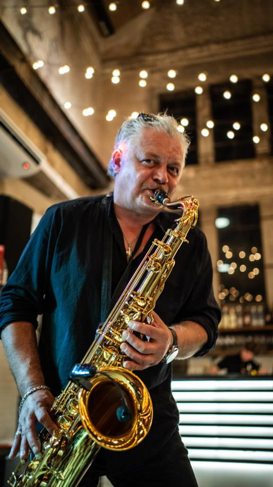
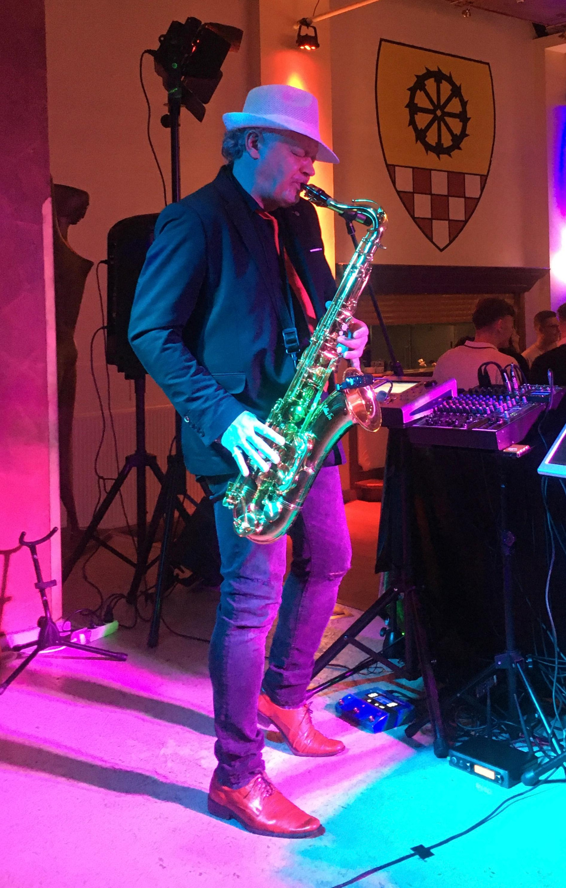
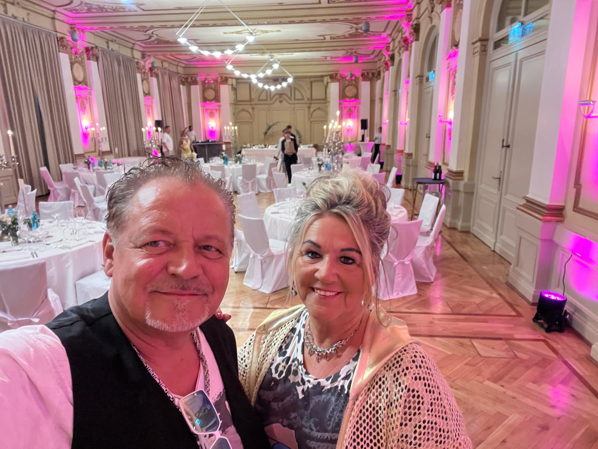
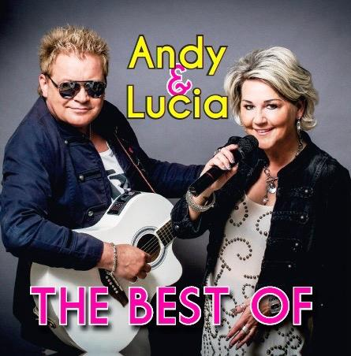
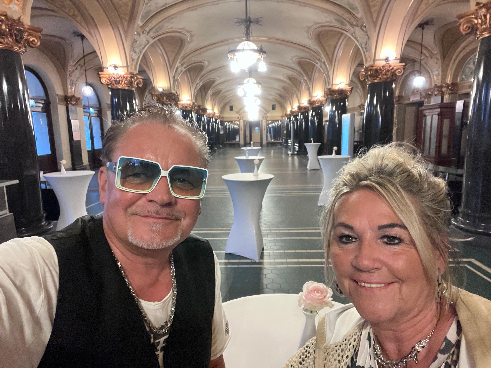

Deutsche SchlagerNiemieckie przeboje
Beliebte Schlager, die vertraut klingen, Emotionen wecken und jede Feier musikalisch bereichern.Znane melodie i utwory, które budzą emocje i zachęcają do wspólnego śpiewania.
Deutsche und polnische Schlager Niemieckie i polskie przeboje
Deutsch polnische Schlager, Live Gesang, Saxophon und beste Stimmung für besondere Feste. Andy & Lucia verbinden Emotion, Tanzfreude und echte Nähe zum Publikum. Niemiecko polskie przeboje, śpiew na żywo, saksofon i świetna atmosfera na wyjątkowe uroczystości. Andy & Lucia łączą emocje, taniec i bliski kontakt z publicznością.
Live Music, DJ Service und Schlager mit Herz Live Music, DJ Service i przeboje z sercem

Das sind wirTo właśnie my
Andy & Lucia stehen für deutsch polnische Schlagermusik mit persönlicher Note. Mit Gesang, Saxophon und sympathischer Ausstrahlung schaffen wir eine Stimmung, die Menschen verbindet und Veranstaltungen unvergesslich macht.
Von bekannten Schlagern über stimmungsvolle Tanzmomente bis hin zu lockeren Moderationen entsteht ein abwechslungsreiches Programm für Gäste, die feiern, mitsingen und genießen möchten.
Andy & Lucia to niemiecko polska muzyka rozrywkowa z osobistym charakterem. Śpiew, saksofon i serdeczna energia tworzą atmosferę, która łączy ludzi i zostaje w pamięci.
Od znanych przebojów po taneczne momenty i swobodny kontakt z publicznością powstaje różnorodny program dla gości, którzy chcą świętować, śpiewać i dobrze się bawić.
Unsere MusikNasza muzyka
Live Gesang, Saxophon und auf Wunsch DJ Stimmung verbinden deutsche und polnische Musikwünsche zu einem mitreißenden Programm. Śpiew na żywo, saksofon oraz opcjonalnie oprawa DJ łączą niemieckie i polskie muzyczne życzenia w jeden porywający program.
Beliebte Schlager, die vertraut klingen, Emotionen wecken und jede Feier musikalisch bereichern.Znane melodie i utwory, które budzą emocje i zachęcają do wspólnego śpiewania.
Polnische Hits mit Herz, Rhythmus und einer Atmosphäre, die Generationen verbindet.Polskie przeboje pełne serca, rytmu i atmosfery, która łączy pokolenia.
Ideal für Feste, Tanzabende, Familienfeiern und stimmungsvolle Momente mit persönlicher Note.Idealny program na uroczystości, wieczory taneczne, imprezy rodzinne i wyjątkowe chwile.
Live erlebenNa żywo
Ob Geburtstagsfeier, Vereinsabend, Stadtfest oder private Party, Andy & Lucia gestalten ein musikalisches Programm, das Emotion, Tanzfreude und Unterhaltung vereint.Niezależnie od tego, czy to urodziny, impreza stowarzyszenia, festyn miejski czy prywatna uroczystość, Andy & Lucia tworzą program łączący emocje, taniec i dobrą zabawę.

GalerieGaleria
Ein paar Eindrücke von Auftritten, Live Momenten und der Stimmung rund um Andy & Lucia. Kilka ujęć z występów, muzycznych chwil i atmosfery wokół Andy & Lucia.



KontaktKontakt
Sie planen eine Feier, ein Stadtfest oder einen stimmungsvollen Abend und möchten Andy & Lucia live erleben? Rufen Sie uns an oder senden Sie Ihre Anfrage mit Datum, Ort und Anlass.Planują Państwo uroczystość, festyn lub nastrojowy wieczór i chcą usłyszeć Andy & Lucia na żywo? Prosimy zadzwonić lub przesłać datę, miejsce i rodzaj wydarzenia.